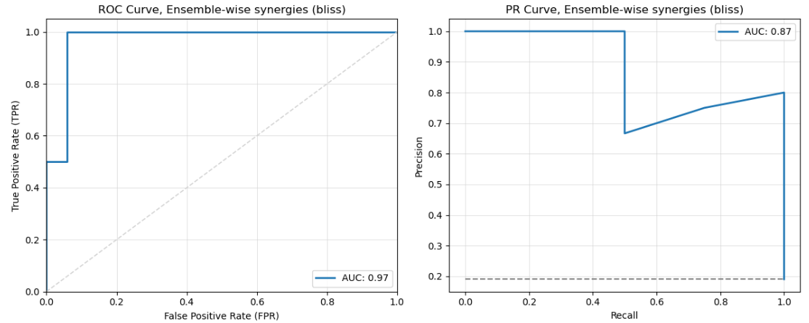

Train and Predict
The PyDrugLogics package provides methods to train Boolean models and predict drug synergies.
To see the full Jupyter Notebook tutorial click here.
This page details the main functions for executing training and prediction tasks: train, predict, and execute.
Train
The train function optimizes a Boolean model using a Genetic Algorithm.
Training involves optimizing Boolean models so that they best represent the observed biological system. The process uses a genetic algorithm to iteratively refine the models, ensuring alignment with observations such as steady states or global outputs.
The pipeline uses the PyGAD Genetic Algoritm. For more information about the PyGAD.GA click here.
The Genetic Algorithm
Initial Model Generation: Boolean models are generated from the initial Boolean model by applying mutations on it.
Fitness Calculation: Each model is evaluated and fitness score is calculated. Fitness scores reflect how well a model’s predictions match to the provided data.
Selection: Models with higher fitness scores are selected for further refinement. These models are combined (via crossover) to create a new generation of models.
Crossover and Mutation:
There are 3 possible mutation types:
balanced: Only the link operator is mutated.
Example:
A, ((B) | C) | !(D) => A, ((B) | C) & !(D)
topology: One or more nodes are removed or added. Minimum 1 regulator always stays in the equation. There can be no more regulator than was in the original equation.
Example:
A, ((B) | C) | !(D) => A, ((B) | C)
mixed: Combines the balanced and topology mutations.
Example:
A, ((B) | C) | !(D) => A, (B) & !(D)
Stopping Conditions: The process continues until either a specified fitness threshold is reached or the maximum number of generations is completed.
Attractor Calculation
In Boolean networks, attractors represent the long-term behaviors of the system, including fixed points (stable states) or cyclic patterns.
Stable states are fixed-point attractors where the system remains indefinitely, representing steady biological conditions.
Trap spaces are subsets of states the system cannot leave, encompassing stable states and recurring cycles, and provide insight into invariant network behaviors.
In the pipeline, MPBN and PyBoolNet packages are used to compute stable states and trap spaces.
Example of adding the attractor calculation method:
GA Fitness Score Calculation
1. Steady State Responses
Fitness is calculated by comparing the model’s attractors to the observed steady states. The formula is:
For example, an observed response:
A: 0 B: 1 C: 0
If the model predicts an attractor:
A: 0 B: 1 C: *
The fitness score is calculated as:
2. Global Output Responses
When evaluating global outputs, the fitness measures the deviation between predicted and observed outputs. The formula is:
Where:
\(\text{globaloutput}_{\text{obs}}\): Observed global output from the training data:
\(\text{globaloutput}_{\text{pred}}\): Predicted global output from the model:
To calculate the predicted global output (\(\text{globaloutput}_{\text{pred}}\)), the following steps are needed:
First, compute the weighted average score (\(\text{globaloutput}_{\text{pred}}\)) across all attractors:
Where:
\(k\): Number of attractors of the model.
\(n\): Number of nodes defined in the modeloutputs file.
\(\text{ss}_{i}^{j}\): The state of node \(i\) in the \(j\)-th attractor (values can be 0, 1, or 0.5).
\(w_{i}\): The weight associated with each node.
Next, normalize the global output (\(\text{globaloutput}_{\text{norm}}\)) to the \([0, 1]\) range using the following equation:
Where:
\(\text{max}(\text{gl}) = \sum_{w_i > 0} w_i\): The sum of all positive weights.
\(\text{min}(\text{gl}) = \sum_{w_i < 0} w_i\): The sum of all negative weights.
For example, consider a Boolean model with one attractor where the modeloutput nodes have the following states:
A: 0 B: 1 C:*
Model Ouputs:
A: 1 B: 1 C: -1
The fitness score is calculated as:
Next, normalize the predicted global output using the following values:
Normalize the global output:
Substitute the values:
Finally, calculate the fitness score using the observed global output (\(\text{globaloutput}_{\text{obs}} = 1\)):
Substitute the values:
Therefore, the fitness score is 0.75, reflecting the degree of alignment between the model’s predicted and observed global outputs.
Arguments
1. Arguments for the Genetic Algorithm (`ga_args`)
The pipeline uses the PyGAD Genetic Algoritm. For more information about the PyGAD.GA initialization click here.
ga_args = {
'num_generations': 20,
'num_parents_mating': 3,
'mutation_num_genes': 10,
'fitness_batch_size': 20, # should be the same as the num_generations
'crossover_type': 'single_point',
'mutation_type': 'random',
'keep_elitism': 6,
# 'stop_criteria': 'reach_95'
}
2. Arguments for the Evolution (`ev_args`)
num_best_solutions: Number of the best solutions per Evolution run.
num_of_runs: Number of running the Evolution
num_of_cores: Maximum number of cores for calculations
num_of_init_mutation: Number of mutated genes in the initial population.
ev_args = {
'num_best_solutions': 3,
'num_of_runs': 50,
'num_of_cores': 4,
'num_of_init_mutation': 12
}
Code Example
There are 2 possible ways to initialize run train on a Boolean model:
Initialize the train function
from pydruglogics.execution.Executor import train
best_boolean_models = train(boolean_model=boolean_model_bnet, model_outputs=model_outputs,
training_data=training_data, ga_args=ga_args, ev_args=ev_args)
Initialize the executor function
from pydruglogics.execution.Executor import execute
train_params = {
'boolean_model': boolean_model_bnet,
'model_outputs': model_outputs,
'training_data': training_data,
'ga_args': ga_args,
'ev_args': ev_args,
'save_best_models': True,
'save_path': './models'
}
execute(train_params=train_params)
Note
If the Training Data is not provided, the train function will calculate the fitness using the Global Output Response, assuming a default globaloutput value of 1.
Example Results
Saved .bnet File:
# 2024_11_10, 2019
# Evolution: 1 Solution: 1
# Fitness Score: 0.998
A, ((B) | C)
B, !(D)
C, (E) & !(F)
D, (A) | !(C)
Output
Optimized Boolean model: The Boolean model fitted to the training data or left unperturbed.
Predict
The predict function evaluates the trained Boolean model against drug perturbations to predict synergy scores.
The prediction process uses an ensemble of trained Boolean models and a list of drug perturbations to evaluate their effects on a biological network. For each perturbation, the Boolean models are modified to reflect the drug’s impact on target nodes (e.g., inhibiting or activating specific proteins). The perturbed models are then simulated to compute their responses.
Steps in Prediction
1. Apply Perturbations: Perturbations (from the drug panel) are applied to each Boolean model. This modifies the Boolean equations of target nodes to simulate the effects of the drugs.
If the drug inhibits the target node, the equation will be set to: A, 0.
If the drug activates the target node, the equation will be B, 1.
Simulate Responses: Attractors are calculated for the perturbed models, and global output response values are computed using the model outputs.
Evaluate Synergies:
The global output responses are used to assess whether drug combinations are synergistic or antagonistic.
The pipeline uses Bliss Independence or Highest Single Agent (HSA)
The predicted synergy scores are compared with the observed synergy scores. This determines how accurate the predicted synergy scores are.
Code Example
There are 2 possible ways to initialize run predict:
Initialize the predict function:
from pydruglogics.execution.Executor import predict
predict(best_boolean_models=best_boolean_models, model_outputs=model_outputs, perturbations=perturbations,
observed_synergy_scores=observed_synergy_scores, synergy_method='bliss', run_parallel= True,
plot_roc_pr_curves=True, save_predictions=False, cores=4)
Initialize the executor function:
predict_params = {
'perturbations': perturbations,
'model_outputs': model_outputs,
'observed_synergy_scores': observed_synergy_scores,
'synergy_method': 'hsa',
'plot_roc_pr_curves': True,
'save_predictions': False,
# 'save_path': './predictions',
# 'model_directory': './models/example_models',
# 'attractor_tool': 'mpbn',
# 'attractor_type': 'stable_states'
}
from pydruglogics.execution.Executor import execute
execute(predict_params=predict_params)
Example Results
Response Matrix
e1_s1 e1_s2 e1_s3 e2_s1
PI-PD NA -1.0 NA 3.0
PI-CT 3.0 2.0 NA 3.0
Predicted Synergies
perturbation_name synergy_score
PI-PD -0.158
PI-CT 0.003
ROC an PR Curves
{kind=link}
Output
Predicted synergy scores: A list of synergy scores for each perturbation.
Response Matrix: A matrix containing the resonses for each perturben Boolean model and the prerturbation.
Execute
The execute method is a streamlined function that combines training and prediction in one step. It takes train_params and predict_params as arguments to define the configuration for training and prediction.
Arguments
train_params: A dictionary specifying the parameters for training.
predict_params: A dictionary specifying the parameters for prediction.
Code Example
ga_args = {
'num_generations': 20,
'num_parents_mating': 3,
'mutation_num_genes': 10,
'fitness_batch_size': 20, # should be the same as the num_generations
'crossover_type': 'single_point',
'mutation_type': 'random',
'keep_elitism': 6,
# 'stop_criteria': 'reach_95'
}
ev_args = {
'num_best_solutions': 3,
'num_of_runs': 50,
'num_of_cores': 4,
'num_of_init_mutation': 12
}
train_params = {
'boolean_model': boolean_model_bnet,
'model_outputs': model_outputs,
'training_data': training_data,
'ga_args': ga_args,
'ev_args': ev_args,
'save_best_models': False,
# 'save_path': './models'
}
predict_params = {
'perturbations': perturbations,
'model_outputs': model_outputs,
'observed_synergy_scores': observed_synergy_scores,
'synergy_method': 'bliss',
'plot_roc_pr_curves': True,
'save_predictions': False,
# 'save_path': './predictions',
# 'model_directory': './models/example_models',
# 'attractor_tool': 'mpbn',
# 'attractor_type': 'stable_states'
}
from pydruglogics.execution.Executor import execute
execute(train_params=train_params, predict_params=predict_params)
Example Results
The execute method produces both the outputs of the train and predict functions.
Example Outputs from Train
# 2024_11_10, 2019
# Evolution: 1 Solution: 1
# Fitness Score: 0.998
A, ((B) | C)
B, !(D)
C, (E) & !(F)
D, (A) | !(C)
Example Outputs from Predict
Response Matrix
e1_s1 e1_s2 e1_s3 e2_s1
PI-PD NA -1.0 NA 3.0
PI-CT 3.0 2.0 NA 3.0
Predicted Synergies
perturbation_name synergy_score
PI-PD -0.158
PI-CT 0.003
ROC an PR Curves